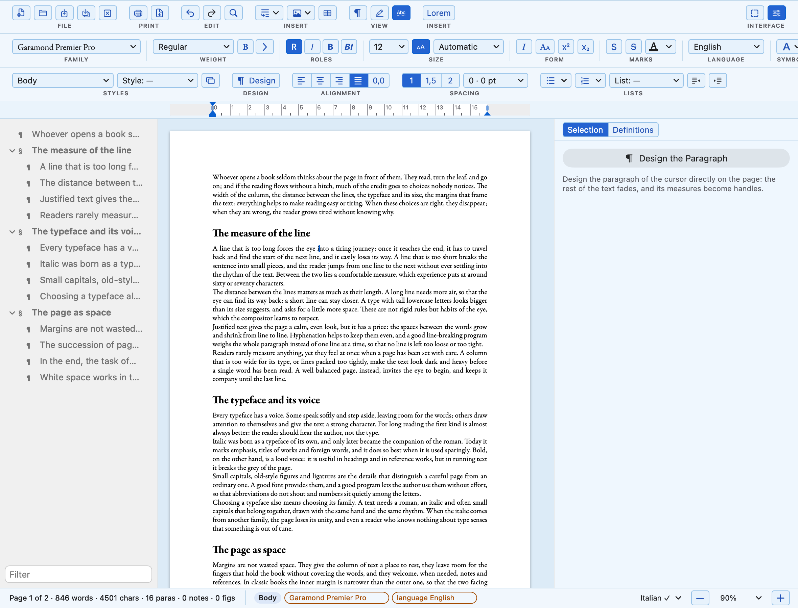
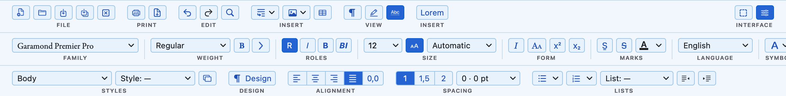
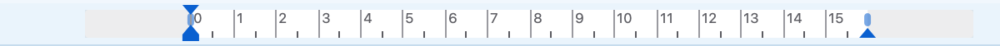
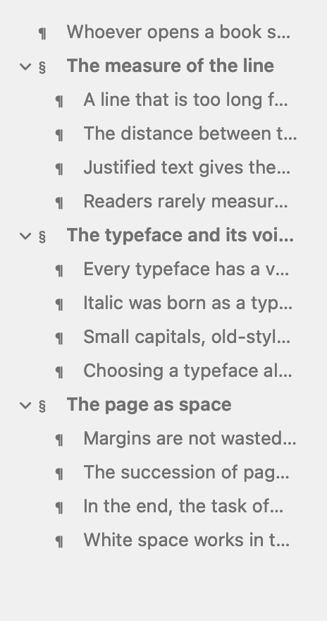
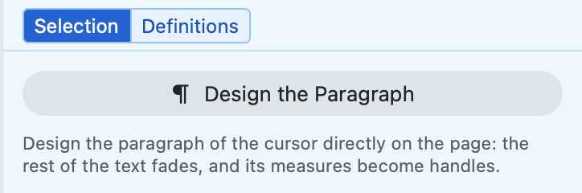
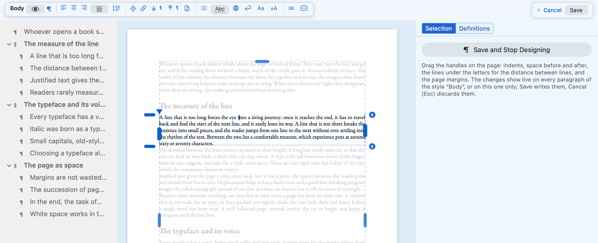
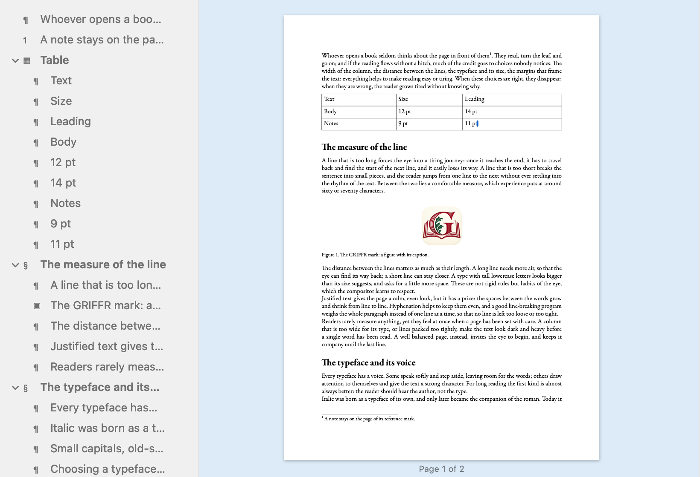
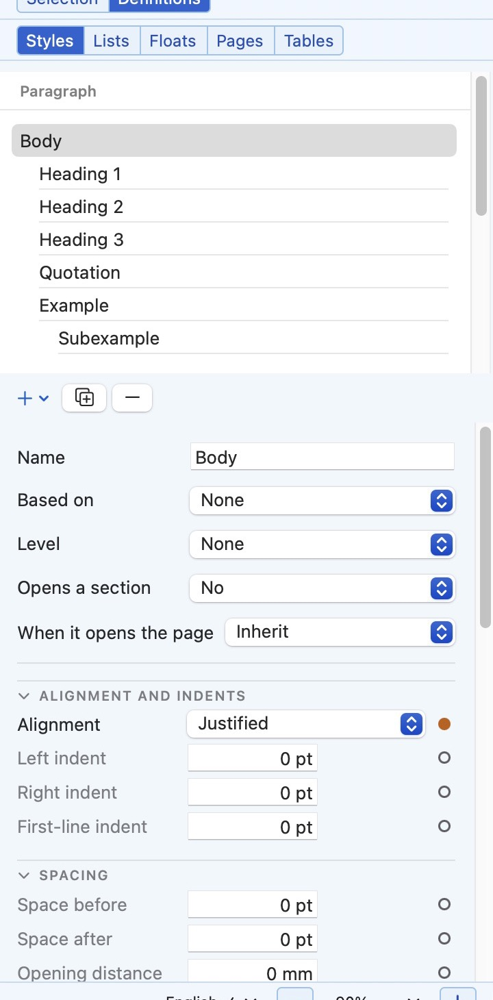
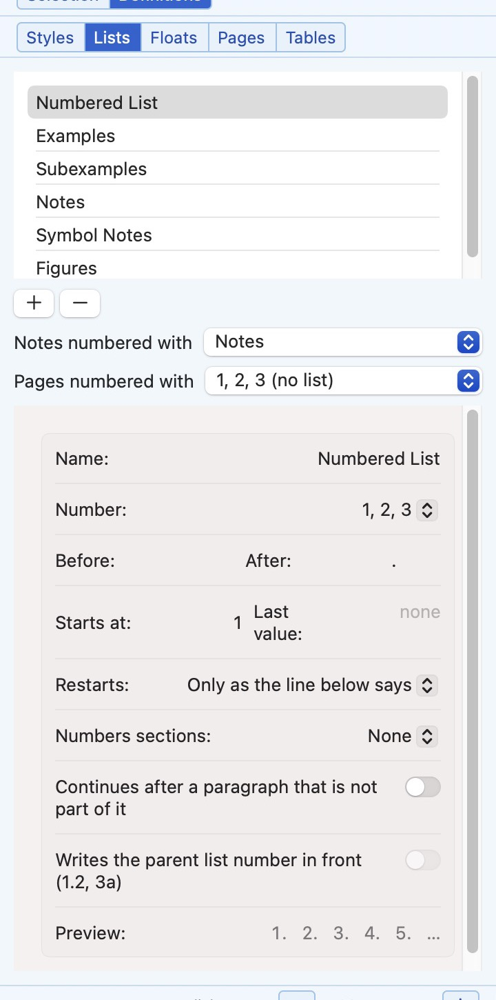
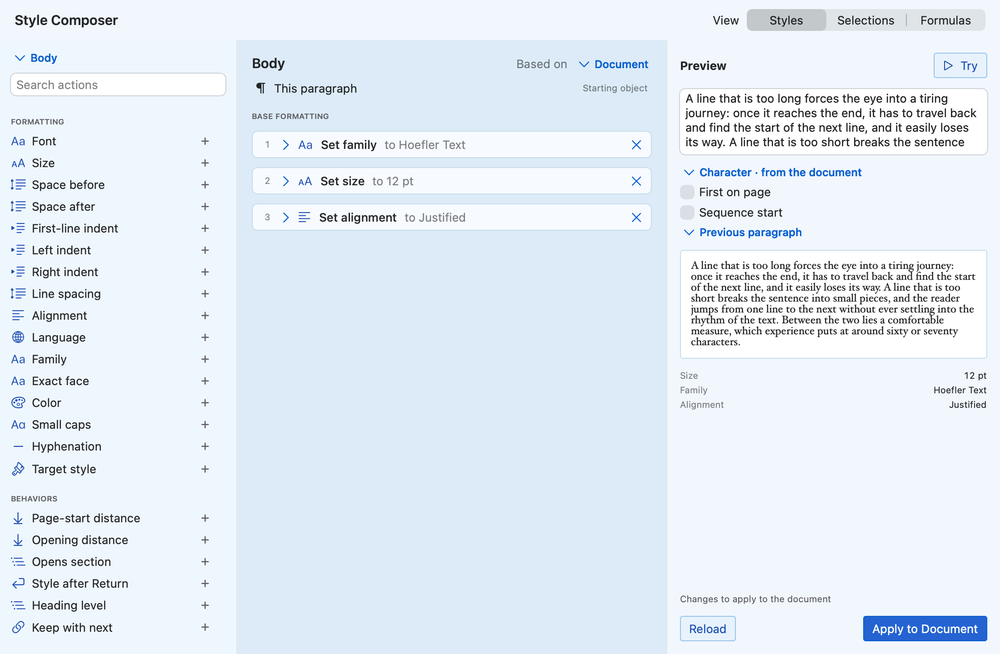

The button at the top right (⌥⌘A) shows all the tools, the object tree and the side panel.

Object tree on the left, the page in the middle, the panel of the selection and of the document's definitions on the right.

The bands are grouped into labelled zones: File, Print, Edit, Insert, View; Family, Weight, Roles, Size, Form, Marks, Language; Styles, Design, Alignment, Spacing, Lists. Zones can be rearranged.

Ruler: indents of the paragraph and margins of the page, in centimetres. Drag the markers.

Object tree: sections (§) and paragraphs (¶) of the document. A click moves the cursor there.

Selection works on the paragraph of the cursor; Definitions holds styles, lists, floats, pages and tables.Status bar: counts, the style and the additions at the cursor, language and zoom.
Visual design settings set by hand, on the page
Design (⌥⌘G) turns the paragraph of the cursor into an object with handles.

The rest of the page fades. Drag the handles for indents, space before and after, line spacing and margins; the bar above holds the other properties. Save writes the changes into the style, Cancel (Esc) discards them.
Notes, figures, tables objects placed by their style
The Insert menu and band add them at the cursor. Their style decides where they go and how they are numbered.

Table (Insert › Table): Tab moves to the next cell. Figure (Insert › Figure…): the image floats to a good place, with its numbered caption. Footnote (⌥⌘F): the note goes to the foot of the page of its mark; Esc returns to the text. All of them appear in the object tree.
File › Export as PDF… (⌘E) writes the same pages, with the fonts embedded.
Definitions what the document is made of
In the side panel, Definitions holds the shared objects of the document. Changes apply as you type, and can be undone.

Styles: paragraph, word and character styles, each based on another.

Lists: counters with a name, for lists, examples, notes, figures and pages.
Tables: table styles, with their rules, margins and background.
Style composer a style as a sequence of actions
Format › Style Composer… opens a window where a style is built from blocks, like a recipe.

Left: the library of actions; + adds one. Middle: the actions of the chosen style, in order; a click on a value changes it, a drag moves the block. Right: the preview on a sample, with the conditions to try. Apply to Document (⌘↩) writes the style.